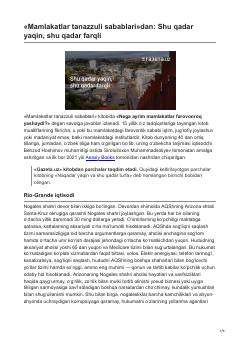

SQDavlatlar taraqqiyoti va tanazzulining asosiy sababi geografiya emas, balki jamiyatdagi institutlardir.
Mazkur matn mashhur «Mamlakatlar tanazzuli sabablari» kitobining ilk bobidan parcha bo'lib, dunyodagi ayrim mamlakatlar nima uchun farovonroq, boshqalari esa kambag'alroq ekanligini tahlil qiladi. Mualliflar geografiya yoki madaniyat emas, aynan siyosiy va iqtisodiy institutlar taraqqiyotni belgilovchi asosiy omil ekanligini Nogales shahri misolida tushuntirib berishadi.